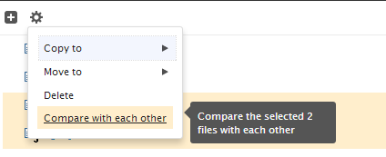
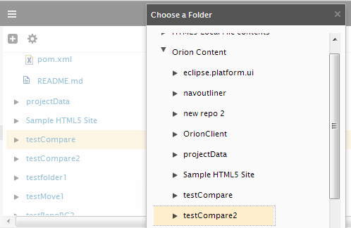
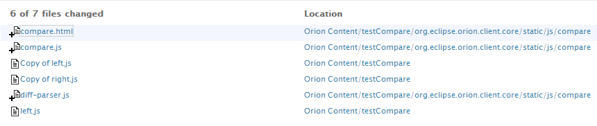

Orion includes a rich browser-based compare infrastructure for analyzing the differences between files and directories. This comparison can be used in conjunction with team support such as Git, or standalone between files and folders in your Orion workspace.
You can compare two text files in Orion by doing the following:

This will open the Compare page showing all the differences between the two files.
You can compare the contents of two folders from the Navigator page. There are two different ways to start the comparison:

This will open a page showing a list of all added, removed, or changed files between the two folders.

By default the changes are sorted by file name, but you can sort by path using the Options menu. Click on a changed file to open it in the Compare page.
This document is maintained in a collaborative wiki. If you wish to update or modify this document please visit http://wiki.eclipse.org/Orion/Documentation/User_Guide/Tasks/Comparing